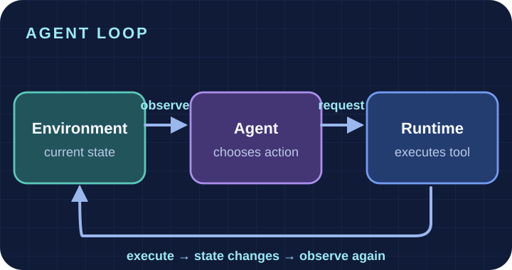
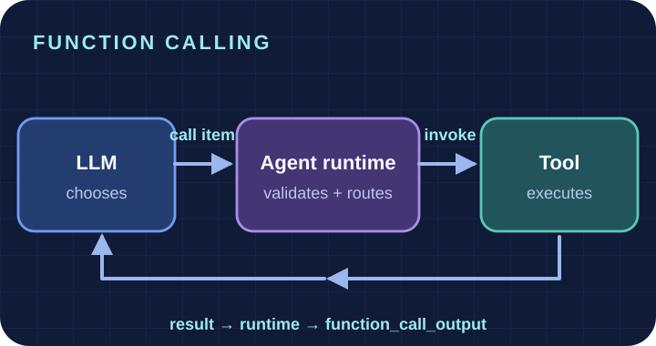
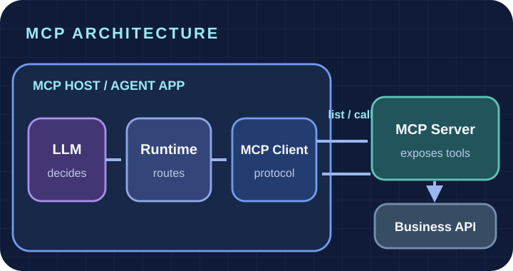
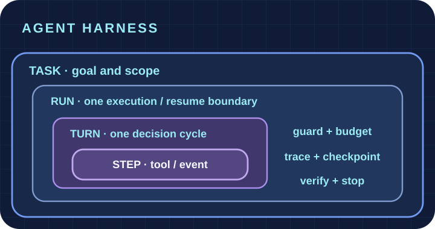
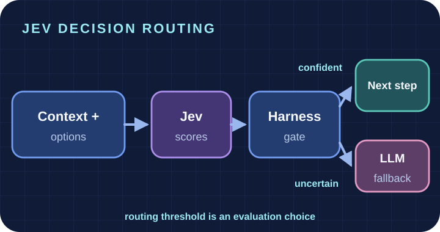

🔄 Agent Loop · 智能体循环
The environment supplies an observation, the Agent proposes an action, and the runtime executes it. A changed state then becomes the next observation.
Agent 的“决定”不等于环境已经变化；执行后必须重新观察并获取反馈，循环才真正闭合。
ReAct paper ↗Follow a request across the model, Python tools, and the next model call. Seven runnable Python labs take you from Agent fundamentals to a daily planner and reliability evaluation.
Where is “Python Basics”, and can I borrow it?
{
"role": "user",
"content": "Where is Python Basics, and can I borrow it?"
}The runtime sends the user message and tool definitions to the model. 图书数据仍在 Python 环境中，模型尚未读取。
Next → the model may answer or request a tool.
Start with the agent–environment loop. Then connect tools, manage information, plan work, inspect a Harness, and evaluate its reliability.

The diagram is a learning map. Modules 03–05 are complementary capabilities, not a strict dependency chain.
These notes are still being written and revised. The first note covers modules 01–02; the separate module 07 note is still to come. Notion page access follows its own sharing settings.
These diagrams are rendered from editable Mermaid sources. Open any diagram for a larger view; the color groups distinguish decisions, runtime, tools, and results.

The environment supplies an observation, the Agent proposes an action, and the runtime executes it. A changed state then becomes the next observation.
Agent 的“决定”不等于环境已经变化；执行后必须重新观察并获取反馈，循环才真正闭合。
ReAct paper ↗
The model emits a tool request. The Agent runtime checks its name and arguments, routes an authorized call to the tool, and returns the result with the same call ID.
模型负责“选哪个工具、传什么参数”；真正运行函数和处理错误的是 Python 程序。请求与执行是两个独立步骤。
OpenAI documentation ↗
The Host contains an MCP Client. That client discovers and invokes capabilities exposed by an MCP Server, which may then call a separate business API.
Host 管理模型与连接；Client 负责协议通信；Server 提供能力。MCP 的工具发现和调用，与模型的 Function Calling 是不同层次。
Official introduction ↗
The Context Builder selects information for this model call. RAG retrieves relevant passages from documents; session history and stored memories enter only if selected.
“已保存”或“已检索”都不等于模型已经看见；只有被组装进本次 Context 的信息才可直接作为依据。
Original RAG paper ↗
Task, Run, Turn, and Step are nested scopes, not four actions in sequence. The Harness manages execution limits, tool boundaries, traces, checkpoints, and completion checks across them.
模型给出候选动作，Harness 管理能否执行、如何记录、何时恢复或停止；Checkpoint 与 Trace 也不是同一种状态。
Inspect the Harness lab ↗
A Jev-style model scores supplied choices. In the planned study, a Harness-side confidence gate will decide whether to accept that choice or ask an LLM instead.
Jev 不直接执行动作，置信度门槛也不是模型天然自带的可靠保证；我们会实测正确率、校准、成本与延迟。
JevAgentHarness paper ↗Each lab has runnable code and a detailed Chinese guide. Follow the sequence or jump to the concept you want to inspect.
Separate decisions from environment execution. Compare cleaning policies and action costs across six rooms.
Inspect function-call requests, Python tool execution, feedback to the model, and instruction experiments.
Connect one virtual phone task through local functions, REST API, and MCP; trace each request path.
Assemble model context from session history, saved preferences, and retrieved project guides.
Discover a reusable Skill, plan a meeting, reflect on failures, and repair the resulting plan.
Run the Daily Focus Planner with Task, Run, Turn, and Step traces, guarded execution, retries, and checkpoints.
Audit real run artifacts, inject faulty decisions and tool failures, and generate a diagnosis report across eight scenarios.
The seven labs are live. These projects are planned research and builds, with study notes and new experiments continuing to grow.
Let an Agent inspect failed runs, propose a better workflow, and test its own changes. Watch each accepted improvement earn its place through repeatable evaluation.
Turn reviewer comments into a map of claims, missing evidence, and targeted experiments. Follow the path from criticism to results to a reviewable point-by-point response.
Can a decision model take clear-cut Agent choices and hand uncertain ones to an LLM? Compare success, speed, cost, and confidence on real traces to find where it helps—and where it fails.
Clone the repository and run the six-room cleaning experiment. The LLM labs have separate setup steps in their guides.
git clone https://github.com/braventechcn/Agent_System.git
cd Agent_System
python3 -m venv .venv
.venv/bin/python 00_agent_system_basics/cleaning_agent.py